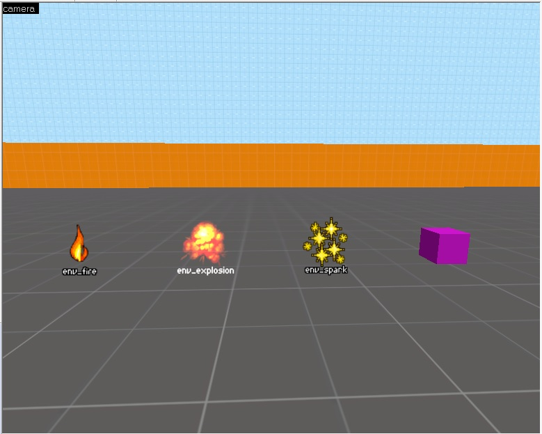
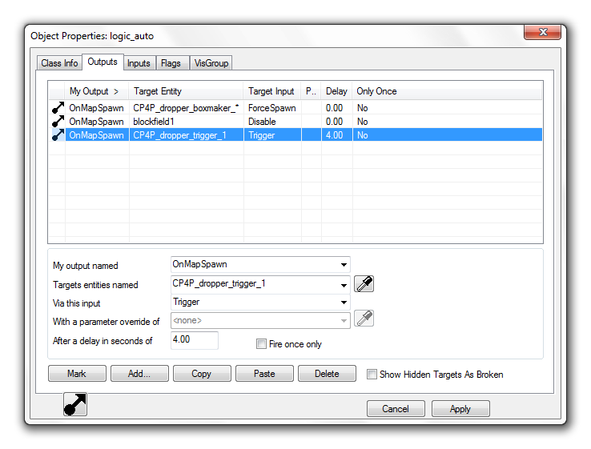

Game engine logic systems
Almost all games need some way to connect actions in the game world with events they cause. The simplest example is pressing a button to open a door. These connections in some cases can be hardcoded, "every door needs a button to open" and this is perfectly fine when we know that this will be true for the whole game. But we can't always know the scope this precisely, and designers like to experiment to find the best way to interact with the game world.
The problem
These logical connections need to be editable by as many people as possible. A level designer might want to add a door that needs a key, or a cinematic designer might want to play a complex sequence when the player reaches a segment of the level. This means that these connections can't be implemented in code for each case. As that would either require a programmer to step in and write each connection, which would make development slow and cause friction between departments. The other option would be that the designers would need to write the connection code, but this would mean that the designers need to be able to write code. This is rarely the case and would mean that many good designers would need to learn a new discipline.
Existing solutions
Presumably all games that have a large world or complex level logic have some system to solve this. Sadly not many companies share these components, and finding talks about them in the GDC Vault is also hard. There are 2 examples that I could find. From these we can try to take inspiration from. These solutions are at least Source Available and thus we can see how they are implemented.
Source Engine
Source Engine is made by valve and is a highly battle-tested engine. It is one of the oldest engine but we can learn a lot from it as many of the ideas developed for it are now industry standard.
Source has an Input/Output System, it is a highly robust system for designing world logic. For example, all of Portal's puzzles are made using it. The main strength of it is that after making the basic components the designers can do everything else without much help from the programmers. This is achieved with full integration with the Hammer world editor, and many smaller logical building blocks.
I/O system
The Valve developers wiki gives a really good overview of how it works, but I will try to summarize it here as well.
Let's start with what is visible from the system to the user. Anything that can move or has any amount of data or logic is called an entity in Source. These are special as they can have more data on them. One of the most basic examples for an entity is a model, as these need the path of the model to draw, and the textures or shaders to use.
A more interesting example of entities are the non visible ones, like spawners or particle emitters. These are not visible in the game, only in the editor. 
All of these entities have an Input Output tab in the editor
In source engine you can set up connections between entities by connecting one of the entities outputs to another entitiy's input. These Outputs act as events and they are speciic to the type of the entity. For example a "trigger region entitiy" might have an output named OnTrigger, they also have Outputs inherited form their parent classes. Than these Outputs can be maped to the Inputs on other entities. These Inputs are basically actions they can perform. For example a fire particle entity might have StartFire and Extinguish.
These connections can be easily managed form the editor. The user can set up connections define a delay to apply to the event, and also send optional parameters.

The interface has a Convinient dropdown to select the output and an object picker to select the targets.
The power of this system comes from the fact that there are many Logical entities that allow the implementation of more complex logic.
Examples
Some examples of these integrations form Unity and Source:
- game_text entity This is used for displaying text on the screen like a chapter title.
- game_score entity This enity can be used to add or substract a point form a player.
- light_spot entity
This is a basic spotlight that has Inouts to turn it on (
TurnOn) and off (TurnOff) and also to set a patters to use for flickering the light. - logic_auto entity
This is an entity that can fire Outputs automatically when the game starts up.
For example it has
OnMapSpawnwitch is fired any time the map is loaded, there are also versions of this output for when the map is loaded from a save or as the start of a new game. - logic_branch entity
This entity basically holds a single bool value that can be toggled using it's inputs (
ToggleandToggleTest) and it has outputs for when it is set to true and false (OnTrue,OnFalse) - logic_compare entity This entity can comare two inputs and fire an Output ased on the values recieved by it.
- logic_relay entity Using this entity it is possible to forward a sinlge event to many other entities.
- npc_maker entity This entity is responsible for spawning NPCs, it has properties to specify the type, squad and relations, they will have. There are inputs to stop and start spawing, or spwn a single one.
The internals
Most of the code for this is found in the cbase.cpp file of the source code. After a bit of reading we cna see that it calls the g_EventQueue.AddEvent to actually send the event. This has a few parameters that, define the name of the Input to call, the name of the target as string. It also takes in the rest of the things we cna configure in the UI, the delay, the optional parameter.
After this the EventQueue puts this into a list sorted by the time the event needs to fire (Current time + delay). An interesting thing to note is that the EventQueue does not fire the event in the same call. The events are actually acted upon at the top of the core game update loop. This is done in the ServiceEvents function. This aproach makes sure that long chains of events can't cause lag.
The requirements
For designing a system that solves these logical connections we need to decide what are the main requirements for it. At first these requirements should be high level, to see what are the most importan aspects.
A world and gameplay logic system would need to be:
- Easy to use, eg. set up new connections
- Generic
- Fast
1. Easy to use
The system needs to be easy to understand and use while developing the game. Any designer and non-programmer needs to be able to add new connections to create the game world they envisioned. This means that the system needs good editor tooling and integration to allow for seamless workflows. We have seen this in both Unity and Source examples, they both have deep integration with the editor.
2. Generic
The system needs to be able to communicate with as many parts of the game and game engine, as possible. This means that the system should be able to interact with almoast any part of the game. This for example includes the physics system, the cinematic chreography, inventory, and the quest system.
3. Fast
A sisytem with this level of integration and uasge needs to be fast. This is